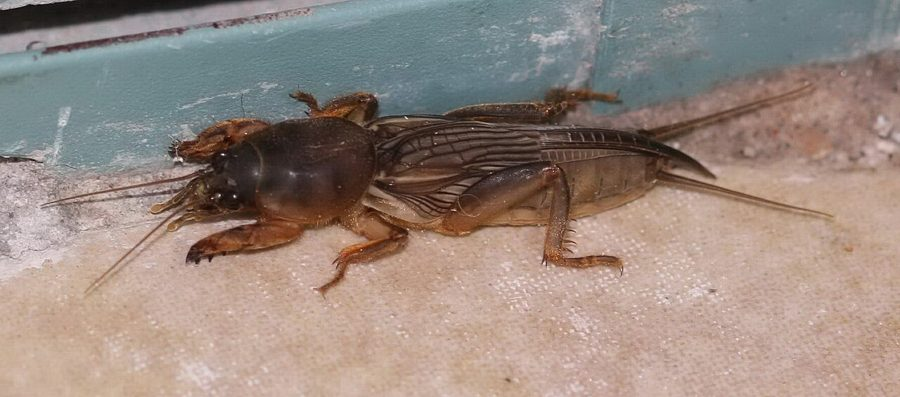

भुरभुरा कीड़ाOriental Mole Cricket
Gryllotalpa orientalis · Gryllotalpidae · INS-0036

- Scientific name वैज्ञानिक नाम
- Gryllotalpa orientalis Burmeister, 1838
- Family कुल
- Gryllotalpidae
- Hindi हिंदी
- भुरभुरा कीड़ा
- Local names स्थानीय नाम
- bhurbhura keeda, mole cricket, oriental mole cricket, bhudbhuda
- Status here यहाँ की स्थिति
- native
- Movement आवागमन
- Resident, here all year
- Known from कहाँ दर्ज
- Others have published records elsewhere in Uttar Pradesh, none yet from this region उत्तर प्रदेश में अन्यत्र दूसरों के अभिलेख, इस क्षेत्र से अभी नहीं
- IUCN IUCN
- not evaluated
- Review समीक्षा
- not yet reviewed
When to look कब देखें
Present all year. साल भर मौजूद।
Tell it apart from इनसे अलग पहचानें
Connections रिश्ते
- preys on केंचुआ · Indian Common Earthworm
- feeds on धान · Paddy
- preyed on by हुदहुद · Common Hoopoe
- preyed on by गाय बगुला · Cattle Egret
- preyed on by चित्तीदार मेंढक · Jerdon's Bullfrog
Documented relationships from the profiles; the web grows as profiles are written.
भुरभुरा कीड़ा / Oriental Mole Cricket
Gryllotalpa orientalis Burmeister, 1838 — Gryllotalpidae
भुरभुरा कीड़ा — झींगुर का भूमिगत रिश्तेदार, जिसके अगले पैर छछूंदर के पंजों जैसे चौड़े फावड़े बन गए हैं। दिन भर नम मिट्टी में सुरंगें खोदता है; मानसून की नम रातों में रोशनी की ओर उड़कर आता है। एशिया भर के कृषि साहित्य में इस पर धान, गेहूँ और सब्ज़ियों की जड़ें-कंद कुतरने की शिकायत दर्ज है, पर यह मिट्टी के कीड़े भी खाता है और हुदहुद जैसे पक्षियों का भोजन है। भारत में इसे लंबे समय तक अफ्रीकी प्रजाति Gryllotalpa africana के नाम से लिखा जाता रहा।
Quick Identification त्वरित पहचान
| Feature | Description |
|---|---|
| Size | Body about 25–34 mm in females (measurements in the Orthoptera Species File); males a little smaller |
| Forelegs | Highly modified, broad, flat, shovel-like with dark tooth-like structures for digging |
| Colouration | Uniform velvety-brown or yellowish-brown; lighter ventral surface |
| Pronotum | Large, oval, heavily sclerotized (hardened); covers head partially |
| Posterior legs | Short, thick; not adapted for jumping like true crickets |
| Behaviour | Crawls rapidly on ground; digs immediately when placed on soil |
| Sound | Males produce characteristic rhythmic chirping from burrow entrances at night |
Field tip: Look for this insect around outdoor lights or on damp porches during humid nights June–September, especially after heavy rain. Search for a medium-sized, stout, velvety-brown insect resembling a cross between a cricket and a mole, with broad shovel-like front legs. Check soil mounds and funnel-like burrow entrances in damp fields.
Morphology आकारिकी
Size. Female body length 25–34 mm in the measured series given by the Orthoptera Species File; males a little smaller.
Body. Cylindrical, robust, covered in fine velvety hairs. Head conical with short antennae (half body length or less) and small dark compound eyes positioned dorsally.
Forelegs (fossorial adaptation). Dramatically modified for digging. Each tibia is broad and flattened like a spade; both tibia and femur are darkened and edged with tooth-like cusps (dactyls) used to shear soil. These legs are among the most highly specialized digging limbs in the insect world.
Mid and hind legs. Simple and slender by comparison; mid legs used for walking; hind legs short and thick, without the powerful musculature for jumping characteristic of true crickets.
Pronotum. Large, thick, rounded, and heavily sclerotized; provides protection and serves as attachment site for powerful digging muscles.
Wings. Forewings (tegmina) short and leathery; hindwings large, membranous, and folded longitudinally beneath the forewings when not in flight. Flying is possible but appears laboured; likely an adaptation for dispersal to new habitats rather than sustained flight.
Abdomen. Segmented; cerci (tail filaments) present but short. No ovipositor (females lack the sword-like structure of other orthopterans).
Behaviour & Ecology व्यवहार और पारिस्थितिकी
Master burrower. Gryllotalpa orientalis is a specialist at tunnel construction, excavating networks of galleries in soil using its powerful, shovel-like foreleg tibiae and teeth. Two kinds of tunnel are described for the genus: shallow feeding runs just under the surface, which raise the soil in low ridges, and deeper shafts for resting, egg-laying and retreat from heat and drought.
Acoustic behaviour. Males produce a characteristic loud, rhythmic chirping from within burrow entrance chambers that amplify sound like acoustic horns. The call is used to attract females and establish territorial dominance. Calling is most intense at night and during humid conditions (monsoon season).
Nocturnal flight. Though primarily subterranean, adults, especially males, take weak nocturnal flights during the monsoon season (June–August) to seek new habitat or mates. They are strongly attracted to artificial lights. This dispersal flight is the only practical way they establish in isolated paddy fields.
Feeding and omnivory. Feeds on soil-dwelling insect larvae, earthworms, root hair, decomposing plant matter, and root vegetables. In paddy fields, will gnaw on young rice roots and seedlings. Diet shifts seasonally with food availability.
The cold months. Mole crickets do not migrate; in the cool dry season they are expected to sit deep in their burrows and come up with the pre-monsoon warmth and the first rains.
Life Cycle / Phenology जीवन चक्र
| Month | Event |
|---|---|
| June–July | Peak mating activity; males call intensively at dusk; females locate males by sound |
| July–August | Females lay eggs in an underground chamber; in the genus the female guards the egg chamber |
| August–September | Eggs hatch; the nymphs stay in the maternal burrow at first |
| September–November | Nymphal growth through several moults |
| December–May | Deep in the burrow; little surface activity |
| June | Re-emergence and warming; reactivation of surface tunnelling |
Larval stage. Nymphs resemble adults in body form and possess functional digging legs from first instar onward. Nymphs are pale cream-coloured and wingless. They develop wing buds progressively through their moults, reaching full-sized wings by final instar (adult). Development time and the number of generations a year under Gangetic conditions have not been published; the calendar above is the expected monsoon rhythm, not a measured one.
Host Plants or Prey आहार
Diet (omnivorous; seasonal variation):
- Soil-dwelling insect larvae and pupae
- Earthworms (particularly Metaphire posthuma, SFL-0002)
- White grubs and beetle pupae
- Decomposing plant roots and stems
- Root hair and root vegetables (potato, radish, turnip)
- Rice (Oryza sativa, FLR-0014) seedling roots and young shoots
- Humus and organic detritus
Predators / Natural Enemies शत्रु
- Common Hoopoe (Upupa epops, BRD-0033) — probes soil to extract adults and nymphs
- Cattle Egret (Bubulcus ibis, BRD-0029) — captures when fields are flooded
- Large bullfrogs (e.g., Hoplobatrachus crassus, AMP-0008) — feed on adults crawling in moist soil at night
- Centipedes (Scolopendra spp.) — hunt in burrows
- Entomopathogenic fungi: Metarhizium anisopliae, Beauveria bassiana — cause infection under high humidity
Agricultural / Human Relevance कृषि प्रासंगिकता
Mixed impact — pest and benefit.
Damage: In potato and vegetable beds, burrowing severs young root systems, causing seedling wilting and crop loss. Damage can be locally significant but is generally minor compared to other pests. Farmers manage by maintaining soil moisture (mole crickets prefer moist soil), hand-catching, or local application of entomopathogenic fungi.
Benefit: Burrowing activity aerates compacted clay soils, improving root penetration and water infiltration. This is particularly valuable in heavy-textured soils of eastern UP. The decomposition of organic matter they process contributes to nutrient cycling.
Expected Locally स्थानीय रूप से अपेक्षित
Not a field record. Written from published accounts for eastern Uttar Pradesh. No confirmed local sighting yet — if you have seen it, that is what the atlas needs.
अभी तक स्थानीय पुष्टि नहीं। यह विवरण प्रकाशित स्रोतों से है, किसी अवलोकन से नहीं।
GBIF holds published records from Uttar Pradesh, none yet from the Awadh–Purvanchal plain or Basti–Ayodhya. Expected in irrigated fields, paddy bunds and vegetable beds across the plain. The easiest meeting is at a lit wall or porch on a humid monsoon night, June to September; by day, raised runs in damp soil, and at dusk the churring of a male from his burrow. A first record would be a photograph of the whole insect showing the spade-like forelegs, with place and date, sent through the About page.
Distribution वितरण
Global range: South and East Asia, including Nepal, India, Sri Lanka, China, Japan, Myanmar, Thailand.
In India: Widespread throughout India in agricultural regions, particularly rice and vegetable-growing areas.
In Uttar Pradesh: GBIF holds a few records from the state, none from the Awadh–Purvanchal plain; the state's pest literature, under the name G. africana, treats mole crickets as present throughout.
In Basti district / eastern UP: No published record from the core districts; expected in irrigated fields on range grounds.
Research Questions शोध प्रश्न
- What is the soil type preference of Gryllotalpa orientalis — does burrow density vary with clay, silt, and sand content in Basti district soils?
- How much seedling loss in potato and vegetable crops can be attributed to mole cricket burrowing in eastern UP?
- Can field-level application of entomopathogenic fungi (Metarhizium) effectively reduce mole cricket populations in rice paddies?
- मानसून से पहले भुरभुरा कीड़ों की संख्या में अचानक बढ़ोतरी क्या सचमुच भारी बारिश की भविष्यवाणी है?
- What is the effect of continuous rice-wheat cropping on mole cricket population dynamics in eastern UP?
Similar Species मिलती-जुलती प्रजातियाँ
| Species | Key Difference | हिंदी | |
|---|---|---|---|
| Gryllotalpa africana (African Mole Cricket) | Not separable in the field; the African species under whose name Indian mole crickets were long recorded (Shishodia, Chandra & Gupta 2010) | अफ्रीकी भुरभुरा कीड़ा | |
| Gryllus bimaculatus ([[field_cricket | Field Cricket]]) | Standard cricket body; long hind legs for jumping; lacks shovel-like digging claws; not fossorial | काला झींगुर — कूदने वाले पैर, सुरंग नहीं खोदता |
| Schizodactylus monstrosus (Splay-footed Cricket) | Larger; pale yellow; wings with coiled tips; sandy river banks; lacks fossorial foreleg modification | रेत का झींगुर — पीला, मुड़े पंख |
Field rule: Velvety-brown cylindrical body, short hind legs lacking jumping power, broad shovel-like foreleg tibiae with tooth-like cusps, found in moist soil and attracted to lights = Gryllotalpa orientalis.
Taxonomy & Classification वर्गीकरण
Original description. Described by Burmeister (1838) in the Handbuch der Entomologie, vol. 2, p. 739; the lectotype is a male from Manila, Philippines (Orthoptera Species File). The genus name Gryllotalpa combines Latin gryllus (cricket) and talpa (mole), referencing the dual nature of the insect. The specific name orientalis (eastern) refers to its eastern Asian origin.
Until November 2026 this profile carried the name Gryllotalpa africana, an African species with no Uttar Pradesh record in GBIF, under which Asian mole crickets were long recorded; the Indian checklist of Shishodia, Chandra & Gupta (2010) and the Orthoptera Species File treat the Indian populations as G. orientalis, which has published records from Uttar Pradesh. The profile was rewritten for that species.
Subspecies. Monotypic — no subspecies are currently recognised.
Family and order placement. Order Orthoptera, suborder Ensifera, family Gryllotalpidae (mole crickets), subfamily Gryllotalpinae. Gryllotalpidae is a small family of burrowing crickets found on every continent but Antarctica.
Phylogenetic notes. Gryllotalpa orientalis represents a lineage of orthopterans that has undergone extreme morphological specialization for a subterranean fossorial lifestyle, parallel to mammalian moles. This convergent evolution represents one of the most dramatic examples of form-function coupling in insects.
IUCN status rationale. Not evaluated. Widespread and common; no conservation concerns.
Photo Gallery फोटो गैलरी
No photos yet — add field photos to media/species/mole_cricket/ and run node scripts/sync_photos.js.
References संदर्भ
- Burmeister, H. (1838). Handbuch der Entomologie, vol. 2, part 2, p. 739. Enslin, Berlin. (original description)
- Chopard, L. (1969). The Fauna of India and the Adjacent Countries. Orthoptera, Vol. 2: Grylloidea. Zoological Survey of India, Calcutta.
- Shishodia, M.S., Chandra, K. & Gupta, S.K. (2010). An annotated checklist of Orthoptera (Insecta) from India. Records of the Zoological Survey of India, Occasional Paper 314: 1–366.
- Kirby, W.F. (1906). A Synonymic Catalogue of Orthoptera. Vol. II. Orthoptera Saltatoria. British Museum, London.
- Cigliano, M.M., Braun, H., Eades, D.C. & Otte, D. Orthoptera Species File: Gryllotalpa orientalis Burmeister, 1838. https://orthoptera.speciesfile.org/otus/837487/overview
- GBIF Occurrence Data — Gryllotalpa orientalis, Uttar Pradesh. https://www.gbif.org/species/search?q=Gryllotalpa%20orientalis
Source file: species/fauna/insects/mole_cricket.md